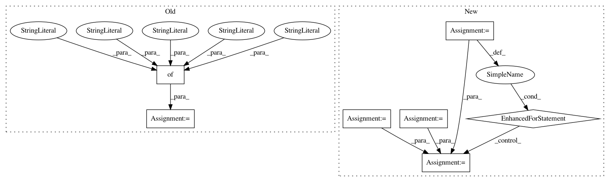

285c8d2190054b4929f5f2d343ff584293ff3f6d,tutorials/intermediate/imshow_extent.py,,generate_imshow_demo_grid,#Any#Any#,23
Before Change
im = ax.imshow(d, origin=origin, extent=extent)
left, right, bottom, top = im.get_extent()
arrow_style = {"arrowprops": {"arrowstyle": "-|>",
"shrinkA": 0,
"color": "0.5",
"linewidth": 3}}
ax.annotate("",
(left, bottom + 2*np.sign(top - bottom)),
(left, bottom),
**arrow_style)
After Change
if auto_limits or left < right:
port_string, starboard_string = "left", "right"
inverted_xindex = False
else:
port_string, starboard_string = "right", "left"
inverted_xindex = True
bbox_kwargs = {"fc": "w", "alpha": .75, "boxstyle": "round4"}
ann_kwargs = {"xycoords": "axes fraction",
"textcoords": "offset points",
"bbox": bbox_kwargs}
ax.annotate(upper_string, xy=(.5, 1), xytext=(0, -1),
ha="center", va="top", **ann_kwargs)
ax.annotate(lower_string, xy=(.5, 0), xytext=(0, 1),
ha="center", va="bottom", **ann_kwargs)
ax.annotate(port_string, xy=(0, .5), xytext=(1, 0),
ha="left", va="center", rotation=90,
**ann_kwargs)
ax.annotate(starboard_string, xy=(1, .5), xytext=(-1, 0),
ha="right", va="center", rotation=-90,
**ann_kwargs)
ax.set_title("origin: {origin}".format(origin=origin))
for index in ["[0, 0]", "[0, M"]", "[N", 0]", "[N", M"]"]:
tx, ty, halign = get_index_label_pos(index, extent, origin,
inverted_xindex)
facecolor = get_color(index, d, im.get_cmap())
ax.text(tx, ty, index, color="white", ha=halign, va="center",
bbox={"boxstyle": "square", "facecolor": facecolor})
if not auto_limits:
ax.set_xlim(-1, 7)
ax.set_ylim(-1, 6)
In pattern: SUPERPATTERN
Frequency: 3
Non-data size: 7
Instances
Project Name: matplotlib/matplotlib
Commit Name: 285c8d2190054b4929f5f2d343ff584293ff3f6d
Time: 2018-04-26
Author: 2836374+timhoffm@users.noreply.github.com
File Name: tutorials/intermediate/imshow_extent.py
Class Name:
Method Name: generate_imshow_demo_grid
Project Name: pgmpy/pgmpy
Commit Name: c44a3dc933b9f9c8dd430cda3cf9803bbe28144c
Time: 2015-06-01
Author: vivek425ster@gmail.com
File Name: pgmpy/tests/test_readwrite/test_XMLBIF.py
Class Name: TestXMLBIFWriterMethodsString
Method Name: setUp
Project Name: flow-project/flow
Commit Name: 67f6d47d9e61f28d455319c868c38fbc11e73366
Time: 2018-02-22
Author: eugenevinitsky@wirelessprvnat-172-16-134-167.near.illinois.edu
File Name: flow/scenarios/bridge_toll/gen.py
Class Name: BBTollGenerator
Method Name: specify_connections